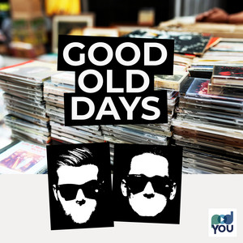
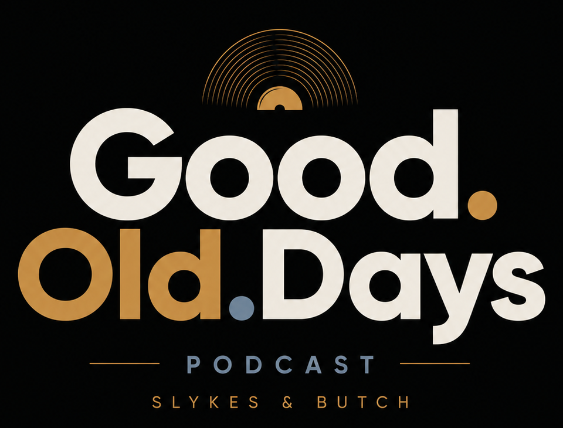

2005
Foxtrot Uniform Charlie Kilo
Bloodhound Gang – ein Song, ein Jahr und fünf Behauptungen.
Im Player suchen

Längst vergessene, aber geile Songs. Dazu fünf Behauptungen über Jahr, Song oder Interpret – und die Frage: Wahr oder falsch?
Aus Datenschutzgründen sind die Spotify-Player zunächst deaktiviert. Erst wenn du einen Player aktiv lädst, wird eine Verbindung zu Spotify hergestellt.
Alle Podcastfolgen direkt über Spotify.
Die Musik aus und rund um Good.Old.Days.
10 Behauptungen aus Songs und Jahren unseres Podcasts. Wie viele erkennst du als wahr oder falsch?
Von 1921 bis in die 2010er: Hier könnt ihr ausgewählte Songs, Jahre und Lieblingsfolgen aus dem Good.Old.Days-Archiv hervorheben.
Bloodhound Gang – ein Song, ein Jahr und fünf Behauptungen.
Im Player suchenUsher – zurück in eine Zeit zwischen Clubsound, Popkultur und Erinnerungen.
Im Player suchenEagles – Klassiker an, Erinnerungen an und ab ins jeweilige Erscheinungsjahr.
Im Player suchenGood.Old.Days ist der Podcast von Felix & Markus aka Slykes & Butch für Musikliebhaber und Freunde gepflegter – und manchmal stumpfsinniger – Unterhaltung. Ihr stellt euch gegenseitig längst vergessene Songs vor, nehmt das jeweilige Jahr auseinander und lasst den anderen bei fünf Behauptungen raten: wahr oder falsch?